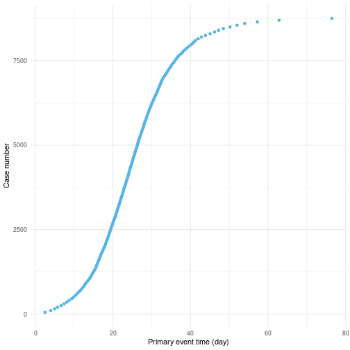
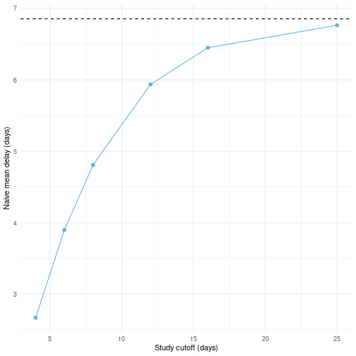
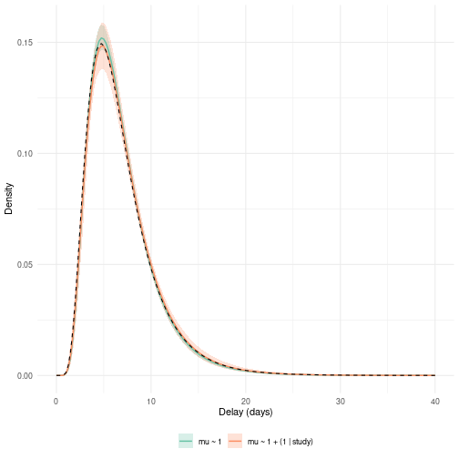
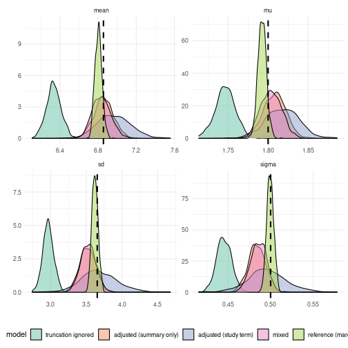
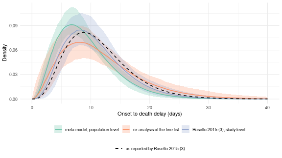

The meta model is experimental. Its interface may still change in future releases.
Systematic reviews of epidemiological delays mostly collect published summary values, such as a mean and standard deviation, or a median and interquartile range, rather than individual level data.
Those summaries are usually biased, because studies often do not adjust for right truncation, treat day rounded delays as if they were continuous, or only partially correct for interval censoring.
The meta model fits directly to these summarised, and potentially biased, published estimates, jointly with any individual level data we do have.
It does this by forward modelling what each study’s own estimation procedure would have converged to.
Jointly synthesising individual level data and published summaries in one hierarchical model overlaps with the federated analysis approach of the ddsynth package.
The meta model differs in adjusting each summary for the biases of the study’s own estimation procedure rather than treating it as an unbiased estimate of the continuous delay.
It also builds on brms, so formulas, families, priors and post-processing all carry over.
For a methodological overview of the biases in published delay estimates see Park et al. (2024), and for a practical checklist aimed at applied users see Charniga et al. (2024).
For individual level rows the meta model reuses the likelihood of the marginal model (vignette("epidist")), which relies on the primarycensored package (Abbott et al. 2025).
1 What we need from a study
Reviews rarely record exactly how a study estimated its delay. To use a reported summary we need to know how the study handled the common biases, along with the data process it saw. The meta model supports only a few common approaches, encoded as follows. We plan to support further biases, such as right and left censoring, across all of the models in the package.
-
How the study adjusted for censoring (
cens_adjusted), one of0if it took integer date differences and summarised them directly (the most common case),1if it used a double interval censored likelihood targeting the continuous delay,2if it adjusted only the secondary interval assuming a uniform delay within it,3if it assigned each delay to the centre of the interval it was observed in, or4if it took the midpoint of the primary event’s window and integrated the secondary interval. -
Whether it adjusted for right truncation (
trunc_adjusted), and if not, the observation time (relative_obs_time) and how collection stopped (trunc_design). For a"cohort"design the observation time is the truncation point on the delay scale. For an"accrual"design, where collection stopped at a calendar date, it is the length of the collection window. -
The censoring windows (
pwindow,swindow), for example 1 for daily reporting or 7 for weekly reporting. -
The sample size (
n) the summary was computed from, or a reported standard error (se). -
The smallest delay it counted (
delay_min), where the study dropped shorter delays, so that its summaries describe a left truncated delay distribution. Defaults to 0, meaning it counted every delay.
If you cannot tell which of these a study used, state the assumption you are making explicitly, and note it alongside any results.
See ?as_epidist_estimates_data for the full details.
Where the underlying delays are available and the cutoff that produced them is known, refitting them with the marginal model (vignette("epidist")) is simpler and more reliable than reconstructing what a summary of them means.
The meta model is for the case where the delays cannot be had.
3 Simulating biased published estimates
We simulate an outbreak exactly as in vignette("epidist"), a stochastic epidemic with a lognormal delay between primary (symptom onset) and secondary (case notification) events, both interval censored to a day.
as_epidist_linelist_data() converts the dates to times in days from the first primary event.
We keep the simulated times as well, to work out what each study would have measured.
as_epidist_marginal_model() adds the censoring windows and the bounds of each delay.
Figure 3.1 shows the case counts.
set.seed(101)
meanlog <- 1.8
sdlog <- 0.5
growth_rate <- 0.2
outbreak_start_date <- as.Date("2024-01-01")
outbreak <- simulate_gillespie(r = growth_rate, seed = 101)
obs <- simulate_secondary(
outbreak,
dist = rlnorm, meanlog = meanlog, sdlog = sdlog
)
obs_cens <- simulate_dates(
obs,
outbreak_start_date = outbreak_start_date, keep_times = TRUE
)
linelist <- as_epidist_linelist_data(obs_cens)
#> ℹ No observation time column provided, using 2024-04-30 as the observation date (the maximum of the secondary event upper bound).
delays <- as_epidist_marginal_model(linelist)
#> ! Setting 8341 relative observation times (`relative_obs_time`) greater than 74
#> (2x the maximum delay) to Inf.
#> ℹ This improves model efficiency by reducing the number of unique observation
#> times in the data.
#> ℹ The impact on model accuracy should be negligible because these relative
#> observation times are high enough to cause very limited right truncation.
#> ℹ The original relative observation times are available in
#> `orig_relative_obs_time`.
#> ℹ Raise `obs_time_threshold` to avoid this behaviour.
head(delays)
#> # A tibble: 6 × 22
#> ptime_lwr ptime_upr stime_lwr stime_upr obs_time case ptime delay stime
#> <dbl> <dbl> <dbl> <dbl> <dbl> <int> <dbl> <dbl> <dbl>
#> 1 0 1 5 6 120 1 0.0488 5.59 5.64
#> 2 0 1 9 10 120 2 0.0658 9.76 9.82
#> 3 0 1 8 9 120 3 0.219 7.90 8.12
#> 4 0 1 10 11 120 4 0.250 10.4 10.6
#> 5 0 1 4 5 120 5 0.301 3.98 4.28
#> 6 0 1 9 10 120 6 0.314 9.36 9.68
#> # ℹ 13 more variables: pdate_lwr <date>, pdate_upr <date>, sdate_lwr <date>,
#> # sdate_upr <date>, obs_date <date>, pwindow <dbl>, swindow <dbl>,
#> # relative_obs_time <dbl>, orig_relative_obs_time <dbl>, delay_lwr <dbl>,
#> # delay_upr <dbl>, n <dbl>, delay_min <dbl>
linelist |>
filter(case %% 50 == 0) |>
ggplot(aes(x = ptime, y = case)) +
geom_point(col = "#56B4E9") +
labs(x = "Primary event time (day)", y = "Case number") +
theme_minimal()
Figure 3.1: Case counts over the course of the simulated outbreak (only every 50th case is shown to avoid over-plotting).
Now imagine several studies each analysing this outbreak at a different point in time, reporting integer date differences with no adjustment for right truncation, that is cens_adjusted = 0 and trunc_adjusted = FALSE.
We mimic this by taking cases whose delay is less than a study specific cutoff, since a case with a longer delay would not yet have been observed by that study.
naive_snapshot <- function(cutoff) {
seen <- delays |>
filter(.data$delay_upr <= cutoff) |>
pull(delay_lwr)
return(tibble(cutoff = cutoff, naive_mean = mean(seen), n = length(seen)))
}
true_mean <- exp(meanlog + sdlog^2 / 2)
bias_illustration <- map(c(4, 6, 8, 12, 16, 25), naive_snapshot) |>
list_rbind()
ggplot(bias_illustration, aes(x = cutoff, y = naive_mean)) +
geom_line(col = "#56B4E9") +
geom_point(col = "#56B4E9", size = 2) +
geom_hline(yintercept = true_mean, linetype = "dashed") +
labs(x = "Study cutoff (days)", y = "Naive mean delay (days)") +
theme_minimal()
Figure 3.2: The naive mean delay from a snapshot taken with a given cutoff (points), compared to the true mean delay (dashed line). Studies analysing the outbreak earlier see a more heavily right truncated, and so more biased, sample of delays.
Real reviews collect studies that differ in how they measured delays and in what they chose to report.
We build ten such studies from the same line list with simulate_study(), which works out which cases a study would have seen and what it would have measured from them.
Each row of the design below is one study.
Two of them report a mean and standard deviation with the covariance between the two, one adjusted for both biases and one adjusted for neither.
Click to expand for the study designs and the code to build the table
set.seed(2)
# A study that stopped at a calendar date needs the growth rate of primary
# events over its collection window. The simulated outbreak grows more slowly
# than its rate parameter once it starts to deplete susceptibles, so we take
# the realised rate rather than the one we simulated with.
primary_counts <- as_tibble(delays) |>
filter(.data$ptime_lwr < 20) |>
count(day = .data$ptime_lwr)
accrual_growth_rate <- coef(
glm(n ~ day, family = poisson, data = primary_counts)
)[["day"]]
study_designs <- tribble(
~study, ~report, ~probs, ~cens_adjusted,
"naive cohort", "moments", NA, 0,
"naive IQR", "quantiles", c(0.25, 0.5, 0.75), 0,
"calendar stop", "quantiles", c(0.2, 0.5, 0.8), 0,
"uniform window", "moments", NA, 2,
"midpoint", "quantiles", c(0.3, 0.6, 0.9), 3,
"adjusted (MVN)", "multivariate", NA, 1,
"naive (MVN)", "multivariate", NA, 0,
"delays over 2d", "moments", NA, 0,
"mean and se", "mean_se", NA, 0,
"midpoint window", "moments", NA, 4
) |>
mutate(
trunc_adjusted = c(
FALSE, FALSE, FALSE, FALSE, FALSE, TRUE, FALSE, FALSE, FALSE, FALSE
),
relative_obs_time = c(12, 16, 20, 25, 30, Inf, 14, 18, 22, 26),
trunc_design = c(
"cohort", "cohort", "accrual", "cohort", "cohort", "cohort",
"cohort", "cohort", "cohort", "cohort"
),
delay_min = c(0, 0, 0, 0, 0, 0, 0, 2, 0, 0),
growth_rate = c(0, 0, accrual_growth_rate, 0, 0, 0, 0, 0, 0, 0),
n = c(180, 55, 240, 95, 40, 300, 150, 130, 25, 110)
)
studies_table <- study_designs |>
transmute(
Study = study,
Reports = case_when(
report == "moments" ~ "mean, sd",
report == "mean_se" ~ "mean with a standard error",
report == "multivariate" ~ "mean, sd with their covariance",
.default = paste0("quantiles at p = ", map_chr(probs, toString))
),
Censoring = case_when(
cens_adjusted == 0 ~ "0: date differences",
cens_adjusted == 1 ~ "1: fully adjusted",
cens_adjusted == 2 ~ "2: uniform window",
cens_adjusted == 3 ~ "3: midpoint",
.default = "4: midpoint primary, uniform secondary"
),
Truncation = case_when(
trunc_adjusted ~ "adjusted",
trunc_design == "accrual" ~ "calendar stop",
.default = "cohort cutoff"
),
`Obs time` = relative_obs_time,
`Min delay` = delay_min,
N = n
)
knitr::kable(studies_table, caption = "The ten simulated studies, their estimation procedures and what each reports.")| Study | Reports | Censoring | Truncation | Obs time | Min delay | N |
|---|---|---|---|---|---|---|
| naive cohort | mean, sd | 0: date differences | cohort cutoff | 12 | 0 | 180 |
| naive IQR | quantiles at p = 0.25, 0.5, 0.75 | 0: date differences | cohort cutoff | 16 | 0 | 55 |
| calendar stop | quantiles at p = 0.2, 0.5, 0.8 | 0: date differences | calendar stop | 20 | 0 | 240 |
| uniform window | mean, sd | 2: uniform window | cohort cutoff | 25 | 0 | 95 |
| midpoint | quantiles at p = 0.3, 0.6, 0.9 | 3: midpoint | cohort cutoff | 30 | 0 | 40 |
| adjusted (MVN) | mean, sd with their covariance | 1: fully adjusted | adjusted | Inf | 0 | 300 |
| naive (MVN) | mean, sd with their covariance | 0: date differences | cohort cutoff | 14 | 0 | 150 |
| delays over 2d | mean, sd | 0: date differences | cohort cutoff | 18 | 2 | 130 |
| mean and se | mean with a standard error | 0: date differences | cohort cutoff | 22 | 0 | 25 |
| midpoint window | mean, sd | 4: midpoint primary, uniform secondary | cohort cutoff | 26 | 0 | 110 |
simulate_study() takes the line list and the design of one study, so purrr::pmap() builds them one at a time from the rows of the design.
as_epidist_estimates_data() takes the list and combines them.
The same pattern works for a review, with one function that converts a row of the review to the summaries and metadata of a study.
biased_estimates <- study_designs |>
pmap(simulate_study, data = linelist, max_delay = 60) |>
as_epidist_estimates_data()
#> ! The smallest quantile reported by "naive IQR" (row 1) sits within ten
#> censoring windows of the smallest delay counted, so the discrete grid barely
#> resolves it. Check `swindow`, and fit a reported mean and standard deviation
#> instead where the study gives them.
#> ℹ See the Checks section of `?as_epidist_estimates_data`.
#> ! The smallest quantile reported by "calendar stop" (row 1) sits within ten
#> censoring windows of the smallest delay counted, so the discrete grid barely
#> resolves it. Check `swindow`, and fit a reported mean and standard deviation
#> instead where the study gives them.
#> ℹ See the Checks section of `?as_epidist_estimates_data`.
#> ! "calendar stop" reports several quantiles of integer day delays from more
#> than 100 delays, so the joint quantile likelihood is overconfident and
#> weights it too heavily. Fit a reported mean and standard deviation instead
#> where one is available.
#> ℹ See the Checks section of `?as_epidist_estimates_data`.
#> ! The smallest quantile reported by "midpoint" (row 1) sits within ten
#> censoring windows of the smallest delay counted, so the discrete grid barely
#> resolves it. Check `swindow`, and fit a reported mean and standard deviation
#> instead where the study gives them.
#> ℹ See the Checks section of `?as_epidist_estimates_data`.
biased_estimates
#> # A tibble: 22 × 16
#> study type value se n p pwindow swindow relative_obs_time
#> <chr> <chr> <dbl> <dbl> <dbl> <dbl> <dbl> <dbl> <dbl>
#> 1 naive cohort mean 6.27 NA 180 NA 1 1 12
#> 2 naive cohort sd 2.50 NA 180 NA 1 1 12
#> 3 naive IQR quan… 4 NA 55 0.25 1 1 16
#> 4 naive IQR quan… 6 NA 55 0.5 1 1 16
#> 5 naive IQR quan… 9 NA 55 0.75 1 1 16
#> 6 calendar stop quan… 3 NA 240 0.2 1 1 20
#> 7 calendar stop quan… 5 NA 240 0.5 1 1 20
#> 8 calendar stop quan… 7 NA 240 0.8 1 1 20
#> 9 uniform wind… mean 6.99 NA 95 NA 1 1 25
#> 10 uniform wind… sd 3.79 NA 95 NA 1 1 25
#> # ℹ 12 more rows
#> # ℹ 7 more variables: trunc_adjusted <lgl>, trunc_design <chr>,
#> # cens_adjusted <int>, delay_min <dbl>, growth_rate <dbl>, max_delay <dbl>,
#> # mvn_id <chr>max_delay sets how far the grid used to work out the implied naive summaries extends.
By default it is the point beyond which one percent of the second moment of a lognormal matched to the study’s summaries lies, or five times the largest reported value where no lognormal can be matched.
Raise it for a delay with a longer tail than that, and lower it to fit faster.
simulate_study() passes it through to as_epidist_estimates_data(), and we set it here rather than take the default.
4 Fitting and comparing models
4.1 A bias-adjusted fit to the summaries alone
We convert the estimates to an epidist_meta_model object and fit it, exactly as we would fit any other epidist model.
meta_summary_only <- as_epidist_meta_model(estimates = biased_estimates)
fit_meta_summary <- epidist(
data = meta_summary_only,
chains = 2, cores = 2, iter = 1000,
refresh = ifelse(interactive(), 250, 0),
seed = 1,
backend = "cmdstanr"
)
summary(fit_meta_summary)
#> Family: meta_lognormal
#> Links: mu = identity; sigma = log
#> Formula: delay_lwr | weights(n) + vint(obs_type, study_n, trunc_adjusted, cens_adjusted, trunc_design, group_start, group_len, chol_start, n_quad) + vreal(relative_obs_time, pwindow, swindow, delay_upr, delay_min, report_se, quantile_p, growth_rate) ~ 1
#> sigma ~ 1
#> Data: transformed_data (Number of observations: 10)
#> Draws: 2 chains, each with iter = 1000; warmup = 500; thin = 1;
#> total post-warmup draws = 1000
#>
#> Regression Coefficients:
#> Estimate Est.Error l-95% CI u-95% CI Rhat Bulk_ESS Tail_ESS
#> Intercept 1.81 0.01 1.78 1.84 1.00 917 634
#> sigma_Intercept -0.73 0.02 -0.77 -0.69 1.00 768 649
#>
#> Draws were sampled using sample(hmc). For each parameter, Bulk_ESS
#> and Tail_ESS are effective sample size measures, and Rhat is the potential
#> scale reduction factor on split chains (at convergence, Rhat = 1).summary() reports sigma on its log link scale.
delay_parameter_draws() puts both parameters back on the scale the simulation used, and tidybayes::median_qi() summarises the draws.
delay_parameter_draws(fit_meta_summary) |>
ungroup() |>
pivot_longer(c("mu", "sigma"), names_to = "parameter") |>
group_by(.data$parameter) |>
median_qi(value)
#> # A tibble: 2 × 7
#> parameter value .lower .upper .width .point .interval
#> <chr> <dbl> <dbl> <dbl> <dbl> <chr> <chr>
#> 1 mu 1.81 1.78 1.84 0.95 median qi
#> 2 sigma 0.484 0.463 0.503 0.95 median qiEven though every study is individually biased, the meta model recovers the simulated log mean of 1.8 and log standard deviation of 0.5 closely.
4.2 Allowing studies to differ
These ten studies measured one outbreak, so a single mu and sigma is the right model for them.
A real review pools studies of different outbreaks, and some of its metadata will be wrong.
A study level random effect on both parameters, (1 | study), lets each study depart from the population value.
The meta model puts no restriction on the brms formula, so the term is written as it would be for any distributional parameter.
The between study standard deviations get normal(0, 0.25) priors rather than the wide brms default.
init = 0.5 narrows the range the chains start from, because the default lets a study’s sigma start far outside where the model is finite.
fit_meta_summary_study <- epidist(
data = meta_summary_only,
formula = bf(mu ~ 1 + (1 | study), sigma ~ 1 + (1 | study)),
prior = prior(normal(0, 0.25), class = "sd") +
prior(normal(0, 0.25), class = "sd", dpar = "sigma"),
init = 0.5,
chains = 2, cores = 2, iter = 1000,
refresh = ifelse(interactive(), 250, 0),
seed = 1,
backend = "cmdstanr"
)
fit_meta_summary_study
#> Family: meta_lognormal
#> Links: mu = identity; sigma = log
#> Formula: delay_lwr | weights(n) + vint(obs_type, study_n, trunc_adjusted, cens_adjusted, trunc_design, group_start, group_len, chol_start, n_quad) + vreal(relative_obs_time, pwindow, swindow, delay_upr, delay_min, report_se, quantile_p, growth_rate) ~ (1 | study)
#> sigma ~ 1 + (1 | study)
#> Data: transformed_data (Number of observations: 10)
#> Draws: 2 chains, each with iter = 1000; warmup = 500; thin = 1;
#> total post-warmup draws = 1000
#>
#> Multilevel Hyperparameters:
#> ~study (Number of levels: 10)
#> Estimate Est.Error l-95% CI u-95% CI Rhat Bulk_ESS Tail_ESS
#> sd(Intercept) 0.03 0.02 0.00 0.09 1.00 376 543
#> sd(sigma_Intercept) 0.11 0.06 0.02 0.23 1.00 360 421
#>
#> Regression Coefficients:
#> Estimate Est.Error l-95% CI u-95% CI Rhat Bulk_ESS Tail_ESS
#> Intercept 1.82 0.02 1.78 1.86 1.00 555 625
#> sigma_Intercept -0.70 0.05 -0.80 -0.61 1.00 512 568
#>
#> Draws were sampled using sample(hmc). For each parameter, Bulk_ESS
#> and Tail_ESS are effective sample size measures, and Rhat is the potential
#> scale reduction factor on split chains (at convergence, Rhat = 1).re_formula = NA switches the study term off, giving the population level delay, which we compare with the fit without the term.
Figure 4.1 shows the delay distribution each fit implies.
Click to expand for code to prepare the study term plot
population <- epidist_newdata(meta_summary_only)
delay_grid <- seq(0, 40, by = 0.25)
lognormal_band <- function(fit, n = 200) {
draws <- delay_parameter_draws(
fit, newdata = population, re_formula = NA
) |>
ungroup()
out <- draws |>
slice_sample(n = min(n, nrow(draws))) |>
mutate(curve = row_number()) |>
reframe(
x = delay_grid,
y = dlnorm(delay_grid, meanlog = .data$mu, sdlog = .data$sigma),
.by = "curve"
) |>
group_by(.data$x) |>
median_qi(y, .width = 0.9)
return(out)
}
study_term_band <- list(
"mu ~ 1" = fit_meta_summary,
"mu ~ 1 + (1 | study)" = fit_meta_summary_study
) |>
map(lognormal_band) |>
list_rbind(names_to = "model")
true_curve <- tibble(
x = delay_grid, y = dlnorm(delay_grid, meanlog = meanlog, sdlog = sdlog)
)
p_study_term <- ggplot() +
geom_ribbon(
data = study_term_band,
aes(x = x, ymin = .lower, ymax = .upper, fill = model), alpha = 0.25
) +
geom_line(
data = study_term_band, aes(x = x, y = y, colour = model),
linewidth = 0.7
) +
geom_line(data = true_curve, aes(x = x, y = y), linetype = "dashed") +
scale_colour_brewer(palette = "Set2", aesthetics = c("colour", "fill")) +
labs(x = "Delay (days)", y = "Density", colour = NULL, fill = NULL) +
theme_minimal() +
theme(legend.position = "bottom")
p_study_term
Figure 4.1: The delay distribution implied by the fits with and without a study term. Lines are the posterior median density and bands the 90% interval. The dashed line is the simulated lognormal.
The term widens the band, which is the price of allowing for differences between studies that here do not exist.
4.3 What happens with the wrong metadata
The metadata about how a study adjusted its estimate matters.
Whether a study corrected for right truncation is the field reviews most often leave out, so we refit the same ten studies with every one of them relabelled as trunc_adjusted = TRUE.
wrong_flags_estimates <- biased_estimates
wrong_flags_estimates$trunc_adjusted <- TRUE
meta_wrong_flags <- as_epidist_meta_model(estimates = wrong_flags_estimates)
fit_meta_wrong_flags <- epidist(
data = meta_wrong_flags,
chains = 2, cores = 2, iter = 1000,
refresh = ifelse(interactive(), 250, 0),
seed = 1,
backend = "cmdstanr"
)
summary(fit_meta_wrong_flags)
#> Family: meta_lognormal
#> Links: mu = identity; sigma = log
#> Formula: delay_lwr | weights(n) + vint(obs_type, study_n, trunc_adjusted, cens_adjusted, trunc_design, group_start, group_len, chol_start, n_quad) + vreal(relative_obs_time, pwindow, swindow, delay_upr, delay_min, report_se, quantile_p, growth_rate) ~ 1
#> sigma ~ 1
#> Data: transformed_data (Number of observations: 10)
#> Draws: 2 chains, each with iter = 1000; warmup = 500; thin = 1;
#> total post-warmup draws = 1000
#>
#> Regression Coefficients:
#> Estimate Est.Error l-95% CI u-95% CI Rhat Bulk_ESS Tail_ESS
#> Intercept 1.75 0.01 1.72 1.77 1.00 840 771
#> sigma_Intercept -0.81 0.02 -0.85 -0.77 1.00 556 641
#>
#> Draws were sampled using sample(hmc). For each parameter, Bulk_ESS
#> and Tail_ESS are effective sample size measures, and Rhat is the potential
#> scale reduction factor on split chains (at convergence, Rhat = 1).The model has no way to know the metadata is wrong, so it takes each reported summary as an estimate of the untruncated delay and converges confidently on a mean several percent too short.
4.4 A mixed fit: summaries plus individual records
Now suppose one site also shared its line list.
We add 300 individual records, observed up to day 40, alongside the same ten published summaries.
Individual records keep any study column they arrive with, and are labelled "individual" when they have none, so the study term above extends to line lists from several sites.
individual_data <- linelist |>
filter(.data$stime_upr <= 40) |>
mutate(obs_time = 40) |>
slice_sample(n = 300)
meta_mixed <- as_epidist_meta_model(
individual_data,
estimates = biased_estimates
)
fit_meta_mixed <- epidist(
data = meta_mixed,
chains = 2, cores = 2, iter = 1000,
refresh = ifelse(interactive(), 250, 0),
seed = 1,
backend = "cmdstanr"
)
summary(fit_meta_mixed)
#> Family: meta_lognormal
#> Links: mu = identity; sigma = log
#> Formula: delay_lwr | weights(n) + vint(obs_type, study_n, trunc_adjusted, cens_adjusted, trunc_design, group_start, group_len, chol_start, n_quad) + vreal(relative_obs_time, pwindow, swindow, delay_upr, delay_min, report_se, quantile_p, growth_rate) ~ 1
#> sigma ~ 1
#> Data: transformed_data (Number of observations: 198)
#> Draws: 2 chains, each with iter = 1000; warmup = 500; thin = 1;
#> total post-warmup draws = 1000
#>
#> Regression Coefficients:
#> Estimate Est.Error l-95% CI u-95% CI Rhat Bulk_ESS Tail_ESS
#> Intercept 1.80 0.01 1.78 1.83 1.00 911 647
#> sigma_Intercept -0.72 0.02 -0.76 -0.69 1.01 669 628
#>
#> Draws were sampled using sample(hmc). For each parameter, Bulk_ESS
#> and Tail_ESS are effective sample size measures, and Rhat is the potential
#> scale reduction factor on split chains (at convergence, Rhat = 1).4.5 Reference: the marginal model on the full line list
Finally, as a reference, we fit the marginal model (vignette("epidist")) to the whole, effectively untruncated, line list.
This is what we would recover with access to every underlying delay rather than to published summaries, so it is the most precise fit here.
The marginal model groups identical rows, so the whole line list costs little more to fit than a sample of it.
fit_reference <- epidist(
data = delays,
chains = 2, cores = 2, iter = 1000,
refresh = ifelse(interactive(), 250, 0),
seed = 1,
backend = "cmdstanr"
)4.6 Comparing the fits
Click to expand for code to prepare the comparison plot
predicted_parameters <- list(
"adjusted (summary only)" = fit_meta_summary,
"adjusted (study term)" = fit_meta_summary_study,
"truncation ignored" = fit_meta_wrong_flags,
mixed = fit_meta_mixed
) |>
map(delay_summary_draws, newdata = population, re_formula = NA) |>
c(list("reference (marginal)" = delay_summary_draws(fit_reference))) |>
map(ungroup) |>
list_rbind(names_to = "model") |>
mutate(model = factor(
model,
levels = c(
"truncation ignored", "adjusted (summary only)",
"adjusted (study term)", "mixed", "reference (marginal)"
)
))
true_sd <- true_mean * sqrt(exp(sdlog^2) - 1)
true_params <- tibble(
parameter = c("mu", "sigma", "mean", "sd"),
value = c(meanlog, sdlog, true_mean, true_sd)
)
p_compare <- predicted_parameters |>
pivot_longer(
cols = c(mu, sigma, mean, sd),
names_to = "parameter", values_to = "value"
) |>
ggplot() +
geom_density(aes(x = value, fill = model), alpha = 0.5) +
geom_vline(
data = true_params, aes(xintercept = value),
linetype = "dashed", linewidth = 1
) +
facet_wrap(~parameter, scales = "free") +
scale_fill_brewer(palette = "Set2") +
labs(x = "", y = "") +
theme_minimal() +
theme(legend.position = "bottom")
p_compare
Figure 4.2: Posterior draws of the delay distribution parameters from the five fits, compared to the true values used in the simulation (dashed lines). The bias-adjusted, mixed, and reference fits agree closely with the truth. The fit told that every study had adjusted for right truncation does not.
5 Real world estimates from epireview
epireview (Naidoo et al. 2025) collates published parameter estimates gathered by the Pathogen Epidemiology Review Group. It is not on CRAN, and so we install it from the mrc-ide r-universe.
We use the onset to death delay from the Ebola data.
ebola_params <- as_tibble(suppressMessages(load_epidata("ebola"))$params)
ebola_params
#> # A tibble: 1,225 × 78
#> id parameter_data_id covidence_id pathogen parameter_type parameter_value
#> <chr> <chr> <int> <chr> <chr> <dbl>
#> 1 b6168… 6f5cb18602d0dfec… 30 Ebola v… Human delay -… NA
#> 2 b6168… b5af335082c4306f… 30 Ebola v… Reproduction … NA
#> 3 b6168… 55766cedfbf75a9c… 30 Ebola v… Human delay -… NA
#> 4 0a142… 3ae1f6b55d0f1cc5… 41 Ebola v… Human delay -… 9.2
#> 5 0a142… 22dc037c9e54b6fa… 41 Ebola v… Severity - ca… 60
#> 6 0a142… f0a0191af0663265… 41 Ebola v… Human delay -… 5.8
#> 7 0a142… a83683d0b55750df… 41 Ebola v… Human delay -… 10.6
#> 8 0a142… e8f4a1705568196f… 41 Ebola v… Risk factors NA
#> 9 67ddf… 5a0a4b5bc6b84974… 45 Ebola v… Severity - ca… 63
#> 10 67ddf… d6d1c36e511e050b… 45 Ebola v… Reproduction … 1.73
#> # ℹ 1,215 more rows
#> # ℹ 72 more variables: exponent <int>, parameter_unit <chr>,
#> # parameter_lower_bound <dbl>, parameter_upper_bound <dbl>,
#> # parameter_value_type <chr>, parameter_uncertainty_single_value <dbl>,
#> # parameter_uncertainty_singe_type <chr>,
#> # parameter_uncertainty_lower_value <dbl>,
#> # parameter_uncertainty_upper_value <dbl>, …epireview records one value per estimate with its type, so we keep the means and medians reported in days with no scaling exponent, and drop inverse rates.
onset_to_death <- ebola_params |>
filter(
.data$parameter_type_short == "delay_onset_to_death",
!is.na(.data$parameter_value),
!is.na(.data$population_sample_size),
.data$parameter_value_type %in% c("Mean", "Median"),
.data$parameter_unit == "Days",
.data$exponent == 0,
!.data$inverse_param
)
shown <- c(
"article_label", "parameter_value_type", "parameter_value",
"parameter_unit", "exponent", "inverse_param", "population_sample_size"
)
select(onset_to_death, all_of(shown))
#> # A tibble: 29 × 7
#> article_label parameter_value_type parameter_value parameter_unit exponent
#> <chr> <chr> <dbl> <chr> <int>
#> 1 Xu 2016 Mean 8.6 Days 0
#> 2 Uyeki 2016 Median 14 Days 0
#> 3 Senga 2016 (1) Mean 11.1 Days 0
#> 4 Schieffelin 2014 Mean 9.79 Days 0
#> 5 Nanclares 2016 Median 9 Days 0
#> 6 Qureshi 2015 Mean 8.9 Days 0
#> 7 Mupapa 1999 Mean 8 Days 0
#> 8 Muoghalu 2017 Mean 6.7 Days 0
#> 9 Li 2016 (a) Median 4 Days 0
#> 10 Rosello 2015 (1) Mean 9.47 Days 0
#> # ℹ 19 more rows
#> # ℹ 2 more variables: inverse_param <lgl>, population_sample_size <int>5.1 Adjusting for the phase of the outbreak
An estimate made while an outbreak is still growing is right truncated and biased towards shorter delays, because the long delays have not yet been observed.
vignette("model") sets out the bias and vignette("epidist") shows the marginal model correcting for it.
Correcting for it here needs the observation time of each study, which epireview does not record.
It does record the phase of the outbreak an estimate was made in, so we adjust for that instead and let the size of the bias be estimated from the studies.
We make the post outbreak studies the reference level. The intercept is then the retrospective delay, and each coefficient is the shift in the other groups.
onset_to_death <- onset_to_death |>
mutate(
phase = case_when(
.data$method_moment_value == "Post outbreak" ~ "post outbreak",
.data$method_moment_value %in% c("Start outbreak", "Mid outbreak") ~
"during outbreak",
.default = "unrecorded"
),
phase = factor(
.data$phase,
levels = c("post outbreak", "during outbreak", "unrecorded")
)
)
count(onset_to_death, phase)
#> # A tibble: 3 × 2
#> phase n
#> <fct> <int>
#> 1 post outbreak 7
#> 2 during outbreak 2
#> 3 unrecorded 20Only two of these studies record having been made during an outbreak, so this contrast is weak.
The unrecorded group mixes studies where the field is missing with studies where it is unspecified, and the term absorbs whatever separates the groups, which need not be truncation alone.
See Charniga et al. (2024) for suggested reporting metadata for future estimation studies and reviews, and andv-linelist-analysis (the Epuyén Andes virus outbreak) and bdbv-linelist-analysis (the 2012 Isiro Bundibugyo Ebola outbreak) for examples of the checklist in use.
epireview does not record how, or whether, a study adjusted for censoring.
Studies rarely adjusted correctly, the common mistakes being to discretise the secondary interval or to shift by the midpoint, so we treat every study as cens_adjusted = 0, integer date differences summarised directly.
Observation times are not recorded either, so every study gets trunc_adjusted = TRUE and the phase term stands in.
A small helper maps each row of onset_to_death to the long format as_epidist_estimates_data() expects.
Means become "mean" rows, with a matching "sd" row where a standard deviation is reported, either as the study’s own spread or as the second parameter of a fitted Gamma.
A reported standard error becomes an se on the mean row instead.
Medians become "quantile" rows at p = 0.5, with further quantile rows at p = 0.25 and p = 0.75 where an interquartile range is reported.
A study reporting a spread that does not match its own value type, such as a median alongside a standard deviation, keeps only the matching set, because summaries of different kinds from one study are fitted as though they were independent.
A study that reports the parameters of a distribution it fitted can be fitted through epidist_estimates_parameters() (see ?epidist_estimates_parameters).
The fitted distributions here are Gammas that epireview records as a mean and a standard deviation, which the helper picks up as moments.
Click to expand for the epireview conversion helper
meta_cols <- c(
"study", "n", "trunc_adjusted", "relative_obs_time", "cens_adjusted", "phase"
)
row_to_estimates <- function(row) {
base <- as_tibble(row[meta_cols])
spread_type <- row$parameter_uncertainty_singe_type
spread <- row$parameter_uncertainty_single_value
reported_sd <- if (identical(spread_type, "Standard Deviation")) {
spread
} else if (identical(row$distribution_par2_type, "Mean sd")) {
row$distribution_par2_value
}
if (identical(row$parameter_value_type, "Mean")) {
rows <- mutate(
base, type = "mean", value = row$parameter_value, p = NA_real_
)
if (identical(spread_type, "Standard Error")) {
rows$se <- spread
}
if (!is.null(reported_sd) && !is.na(reported_sd)) {
rows <- bind_rows(
rows, mutate(base, type = "sd", value = reported_sd, p = NA_real_)
)
}
} else {
rows <- mutate(
base, type = "quantile", value = row$parameter_value, p = 0.5
)
if (identical(row$parameter_uncertainty_type, "IQR")) {
rows <- bind_rows(
rows,
mutate(
base, type = "quantile",
value = row$parameter_uncertainty_lower_value, p = 0.25
),
mutate(
base, type = "quantile",
value = row$parameter_uncertainty_upper_value, p = 0.75
)
)
}
}
return(rows)
}
ebola_estimates_df <- onset_to_death |>
mutate(
trunc_adjusted = TRUE,
relative_obs_time = Inf,
cens_adjusted = 0,
study = .data$article_label,
n = .data$population_sample_size
) |>
pmap(\(...) row_to_estimates(list(...))) |>
list_rbind()
ebola_estimates <- as_epidist_estimates_data(ebola_estimates_df)
#> ℹ No `pwindow` column supplied, assuming a censoring window of 1 (daily
#> reporting) for every study.
#> ℹ No `swindow` column supplied, assuming a censoring window of 1 (daily
#> reporting) for every study.
#> ℹ No max_delay column supplied, using the delay beyond which 1% of the second
#> moment of a lognormal matched to each study's summaries lies (at least 10 and
#> at most twenty times the largest reported value, in whole secondary windows)
#> as the grid cutoff, or five times the largest reported value where nothing
#> can be matched. Raise it if the delay has a longer tail than that, and lower
#> it to speed up fitting.
#> ! The smallest quantile reported by "Nanclares 2016" (row 7), "Li 2016 (a)"
#> (row 14), "Khan 1999" (row 27), "Camacho 2014" (row 35), "Baron 1983" (row
#> 36), "Bah 2015" (row 38), "Miglietta 2019" (row 43), and "Nsio 2019" (row 44)
#> sits within ten censoring windows of the smallest delay counted, so the
#> discrete grid barely resolves it. Check `swindow`, and fit a reported mean
#> and standard deviation instead where the study gives them.
#> ℹ See the Checks section of `?as_epidist_estimates_data`.
#> ! The standard deviation reported by "Muoghalu 2017" (row 13), "Rosello 2015
#> (2)" (row 18), "Maganga 2014" (row 24), and "Folarin 2016" (row 30) has a
#> relative standard error above 0.25 under the lognormal tail its mean implies,
#> so its sampling likelihood cannot be trusted. Fit quantiles from the body of
#> the distribution instead where the study reports them.
#> ℹ See the Checks section of `?as_epidist_estimates_data`.The checks fire because several studies report only a median, which sits within ten days of zero on a daily grid and so is resolved poorly, and because a few report a standard deviation that implies a heavier tail than their sample size can pin down. We fit a reported mean and standard deviation in preference where a study gives them, and take the median where it is all a study reports.
We fit a Gamma, which is the family most of these studies fitted, with a (1 | study) term on both the mean and the shape.
The term allows for real heterogeneity across outbreaks and Ebola species, and for studies whose metadata we have got wrong, which the model cannot tell apart.
Ebola onset to death is thought to take roughly 7 to 14 days, so the intercept prior is centred on ten days with a standard deviation of 0.5 on the log link.
A Gamma shape between about 1 and 5 covers the spreads reported, so the shape intercept gets normal(log(2), 0.5) on its log link.
With the biases that go unrecorded, studies may differ by a quarter or so on the log scale, so both between study standard deviations get normal(0, 0.25).
The phase coefficients get normal(0, 0.5), so that two studies cannot move the contrast without limit.
epidist_prior() shows the priors the model will use.
ebola_prior <- prior(normal(log(10), 0.5), class = "Intercept") +
prior(normal(log(2), 0.5), class = "Intercept", dpar = "shape") +
prior(normal(0, 0.5), class = "b") +
prior(normal(0, 0.25), class = "sd") +
prior(normal(0, 0.25), class = "sd", dpar = "shape")
ebola_meta <- as_epidist_meta_model(estimates = ebola_estimates)
ebola_formula <- bf(mu ~ 1 + phase + (1 | study), shape ~ 1 + (1 | study))
ebola_family <- epidist_family(ebola_meta, family = Gamma(link = "log"))
epidist_prior(
ebola_meta,
family = ebola_family,
formula = epidist_formula(ebola_meta, ebola_family, formula = ebola_formula),
prior = ebola_prior
)
#> prior class coef group resp dpar nlpar lb ub source
#> normal(log(10), 0.5) Intercept <NA> <NA> user
#> normal(0, 0.25) sd <NA> <NA> user
#> normal(0, 0.25) sd shape <NA> <NA> user
#> normal(log(2), 0.5) Intercept shape <NA> <NA> user
#> normal(0, 0.5) b <NA> <NA> user
#> tag
#> <NA>
#> <NA>
#> <NA>
#> <NA>
#> <NA>init = 0.5 is passed for the same reason as above, since the default initial range lets a study’s shape start far outside where the model is finite.
fit_ebola <- epidist(
data = ebola_meta,
formula = ebola_formula,
family = Gamma(link = "log"),
prior = ebola_prior,
init = 0.5,
chains = 2, cores = 2, iter = 1000,
refresh = ifelse(interactive(), 250, 0),
seed = 1,
backend = "cmdstanr"
)
summary(fit_ebola)
#> Family: meta_gamma
#> Links: mu = log; shape = log
#> Formula: delay_lwr | weights(n) + vint(obs_type, study_n, trunc_adjusted, cens_adjusted, trunc_design, group_start, group_len, chol_start, n_quad) + vreal(relative_obs_time, pwindow, swindow, delay_upr, delay_min, report_se, quantile_p, growth_rate) ~ phase + (1 | study)
#> shape ~ 1 + (1 | study)
#> Data: transformed_data (Number of observations: 29)
#> Draws: 2 chains, each with iter = 1000; warmup = 500; thin = 1;
#> total post-warmup draws = 1000
#>
#> Multilevel Hyperparameters:
#> ~study (Number of levels: 29)
#> Estimate Est.Error l-95% CI u-95% CI Rhat Bulk_ESS Tail_ESS
#> sd(Intercept) 0.14 0.03 0.08 0.22 1.00 327 565
#> sd(shape_Intercept) 0.53 0.10 0.35 0.76 1.00 455 736
#>
#> Regression Coefficients:
#> Estimate Est.Error l-95% CI u-95% CI Rhat Bulk_ESS Tail_ESS
#> Intercept 2.24 0.06 2.12 2.36 1.00 464 397
#> shape_Intercept 1.28 0.15 0.98 1.57 1.01 432 559
#> phaseduringoutbreak 0.06 0.12 -0.19 0.30 1.00 646 644
#> phaseunrecorded -0.01 0.08 -0.18 0.12 1.00 562 584
#>
#> Draws were sampled using sample(hmc). For each parameter, Bulk_ESS
#> and Tail_ESS are effective sample size measures, and Rhat is the potential
#> scale reduction factor on split chains (at convergence, Rhat = 1).These estimates should not be used as they stand. The estimation approach of every study was assumed rather than checked against the paper. A publication quality meta analysis would have to do that for each study.
5.2 The population level delay and the size of the phase bias
Switching the (1 | study) term off with re_formula = NA gives the population level delay, the one the studies are estimates of rather than any single study’s own.
We report the Gamma shape and scale alongside the mean and standard deviation they imply.
phase_grid <- epidist_newdata(ebola_meta, phase)
population_draws <- delay_summary_draws(
fit_ebola, newdata = phase_grid, re_formula = NA
) |>
ungroup()
population_draws |>
filter(.data$phase == "post outbreak") |>
mutate(scale = .data$mean / .data$shape) |>
pivot_longer(c("shape", "scale", "mean", "sd"), names_to = "parameter") |>
group_by(.data$parameter) |>
median_qi(value)
#> # A tibble: 4 × 7
#> parameter value .lower .upper .width .point .interval
#> <chr> <dbl> <dbl> <dbl> <dbl> <chr> <chr>
#> 1 mean 9.35 8.32 10.6 0.95 median qi
#> 2 scale 2.62 1.87 3.67 0.95 median qi
#> 3 sd 4.95 4.01 6.05 0.95 median qi
#> 4 shape 3.60 2.67 4.80 0.95 median qiThe phase bias is the contrast between each phase and the retrospective reference.
marginaleffects::comparisons() gives it as a ratio of mean delays, and its draws give the posterior probability that estimates made during an outbreak are shorter.
phase_ratio <- marginaleffects::comparisons(
fit_ebola,
variables = "phase",
newdata = filter(phase_grid, .data$phase == "post outbreak"),
re_formula = NA,
comparison = "ratio"
)
phase_ratio
#>
#> Contrast Estimate 2.5 % 97.5 %
#> during outbreak / post outbreak 1.061 0.827 1.35
#> unrecorded / post outbreak 0.988 0.838 1.13
#>
#> Term: phase
#> Type: response
marginaleffects::get_draws(phase_ratio) |>
summarise(
`P(shorter)` = mean(.data$draw < 1),
`P(shorter by over 10%)` = mean(.data$draw < 0.9),
.by = "contrast"
)
#> contrast P(shorter) P(shorter by over 10%)
#> 1 during outbreak / post outbreak 0.314 0.081
#> 2 unrecorded / post outbreak 0.545 0.1125.3 Comparing with a modern re-analysis of the same line list
Rosello 2015 (3) is the 2012 Isiro outbreak, and that line list has since been re-analysed in bdbv-linelist-analysis from the individual records, adjusting for double interval censoring.
The outbreak had closed before the line list was published, so the delays are not truncated and the re-analysis is the closest thing to a ground truth for any study we fitted to.
It reports onset to death as a convolution of its fitted onset to admission and admission to death delays.
bdbv-onset-to-death.csv holds 1000 draws of the convolution’s mean and standard deviation, subsampled from the posterior the project releases as output/posterior_gamma.csv, and we match a Gamma to each draw.
bdbv <- read.csv("bdbv-onset-to-death.csv") |>
mutate(shape = (.data$mean / .data$sd)^2, scale = .data$sd^2 / .data$mean)
isiro_reported <- ebola_estimates |>
filter(.data$study == "Rosello 2015 (3)") |>
select("type", "value") |>
pivot_wider(names_from = "type", values_from = "value") |>
mutate(shape = (.data$mean / .data$sd)^2, scale = .data$sd^2 / .data$mean)
isiro_draws <- epidist_strata(fit_ebola) |>
filter(.data$study == "Rosello 2015 (3)") |>
delay_summary_draws(object = fit_ebola) |>
ungroup()The mean and standard deviation of the delay, four ways.
interval <- function(draws, source) {
out <- draws |>
pivot_longer(c("mean", "sd"), names_to = "parameter") |>
group_by(.data$parameter) |>
median_qi(value) |>
transmute(
source = source,
parameter = .data$parameter,
value = sprintf("%.2f (%.2f, %.2f)", value, .lower, .upper)
)
return(out)
}
bind_rows(
tibble(
source = "as reported by Rosello 2015 (3)",
parameter = c("mean", "sd"),
value = sprintf("%.2f", c(isiro_reported$mean, isiro_reported$sd))
),
interval(isiro_draws, "Rosello 2015 (3), study level"),
interval(
filter(population_draws, .data$phase == "post outbreak"),
"meta model, population level"
),
interval(bdbv, "re-analysis of the line list")
) |>
pivot_wider(names_from = "parameter", values_from = "value")
#> # A tibble: 4 × 3
#> source mean sd
#> <chr> <chr> <chr>
#> 1 as reported by Rosello 2015 (3) 11.37 5.41
#> 2 Rosello 2015 (3), study level 10.62 (9.26, 12.43) 5.19 (4.07, 6.99)
#> 3 meta model, population level 9.35 (8.32, 10.63) 4.95 (4.01, 6.05)
#> 4 re-analysis of the line list 11.76 (9.31, 15.06) 6.57 (4.88, 9.44)Click to expand for code to prepare the comparison plot
density_band <- function(draws, source, n = 200) {
out <- draws |>
slice_sample(n = min(n, nrow(draws))) |>
mutate(curve = row_number()) |>
reframe(
x = delay_grid,
y = dgamma(delay_grid, shape = .data$shape, scale = .data$scale),
.by = "curve"
) |>
group_by(.data$x) |>
median_qi(y) |>
mutate(source = source)
return(out)
}
post_outbreak_draws <- population_draws |>
filter(.data$phase == "post outbreak") |>
mutate(scale = .data$mean / .data$shape)
comparison_band <- bind_rows(
density_band(
mutate(isiro_draws, scale = .data$mean / .data$shape),
"Rosello 2015 (3), study level"
),
density_band(post_outbreak_draws, "meta model, population level"),
density_band(bdbv, "re-analysis of the line list")
)
reported_curve <- tibble(
x = delay_grid,
y = dgamma(
delay_grid, shape = isiro_reported$shape, scale = isiro_reported$scale
)
)
p_bdbv <- ggplot() +
geom_ribbon(
data = comparison_band,
aes(x = x, ymin = .lower, ymax = .upper, fill = source), alpha = 0.25
) +
geom_line(
data = comparison_band, aes(x = x, y = y, colour = source),
linewidth = 0.7
) +
geom_line(
data = reported_curve,
aes(x = x, y = y, linetype = "as reported by Rosello 2015 (3)"),
colour = "black", linewidth = 0.7
) +
scale_colour_brewer(palette = "Set2", aesthetics = c("colour", "fill")) +
scale_linetype_manual(values = "dashed") +
labs(
x = "Onset to death delay (days)", y = "Density",
colour = NULL, fill = NULL, linetype = NULL
) +
theme_minimal() +
theme(legend.position = "bottom", legend.box = "vertical")
p_bdbv
Figure 5.1: The Isiro onset to death delay, four ways. The dashed line is the Gamma reported by Rosello et al. (2015). The bands are 95% posterior intervals of the density from the meta model for the Rosello 2015 (3) study, from the meta model at population level with the (1 | study) term switched off, and from the re-analysis of the same line list.
The study level estimate is shrunk from the reported Gamma towards the population mean by the (1 | study) term on the mean, and keeps the study’s own spread through the term on the shape.
The population level estimate is shorter than the re-analysis.
Most studies carry no usable truncation metadata, so their estimates are taken as adjusted, and the population estimate pools outbreaks that differ.
6 Learning more
- For the marginal and latent models this vignette builds on, see
vignette("epidist"). - For the mathematical detail behind the meta model’s likelihood, see
vignette("model"). - For a real world example fitting the marginal model to individual level Ebola data, see
vignette("ebola").